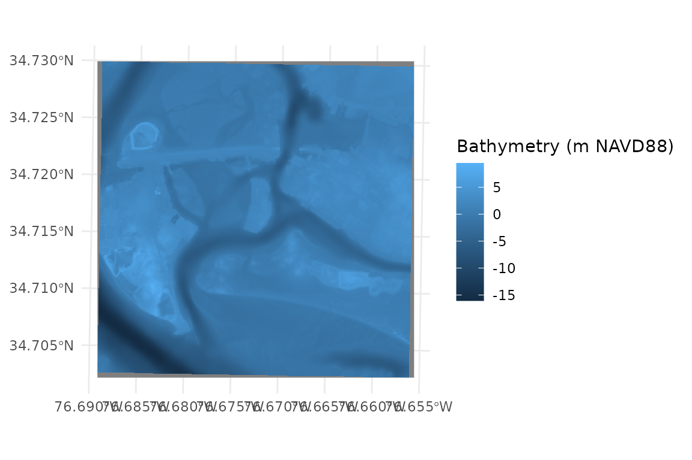
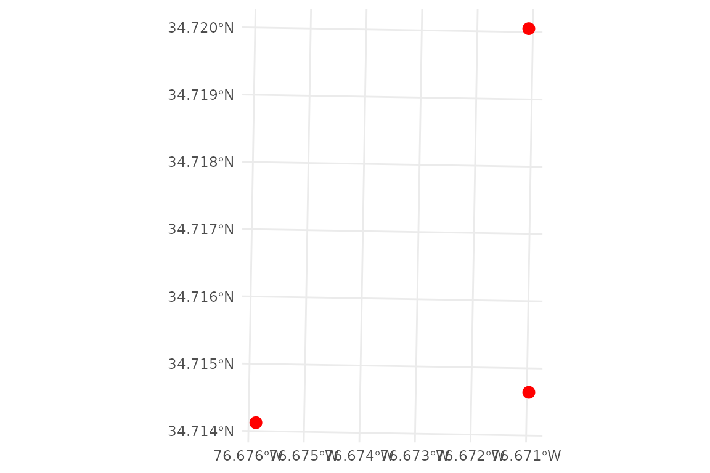
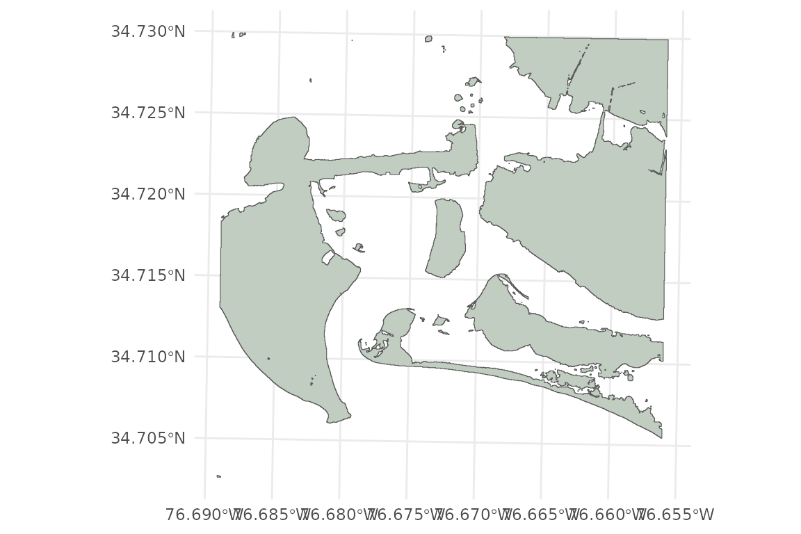
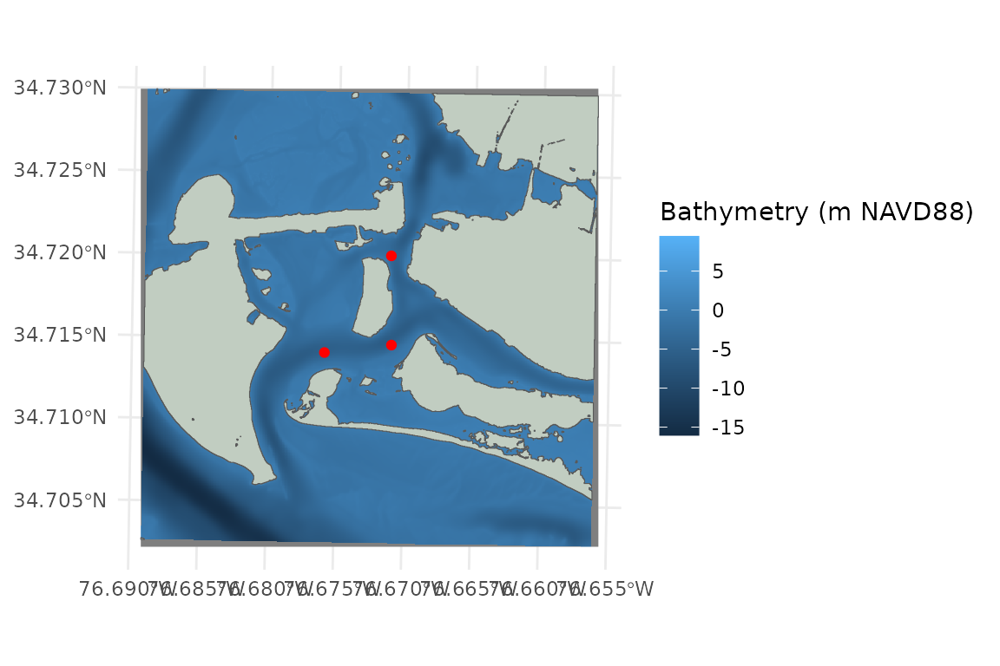
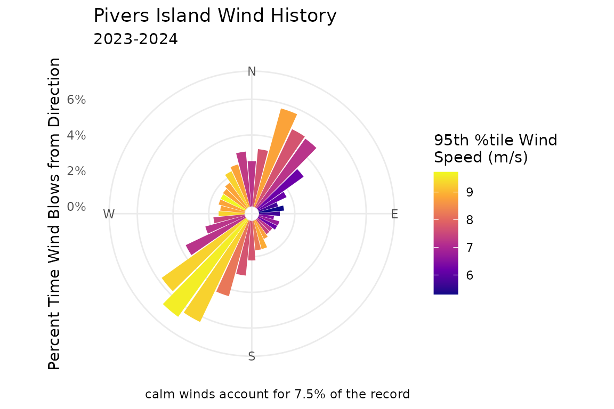
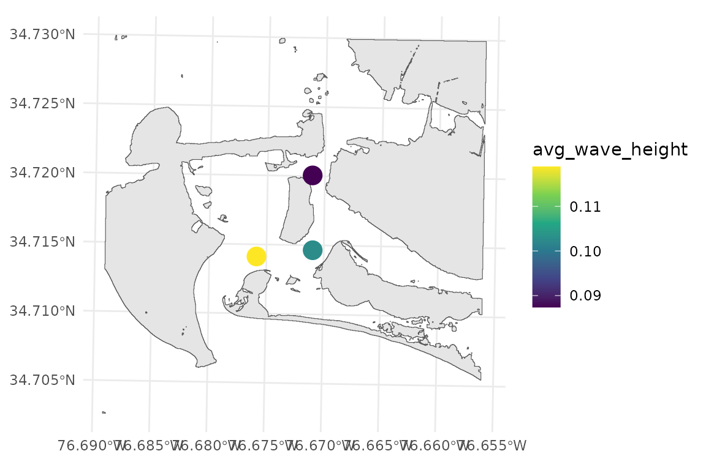
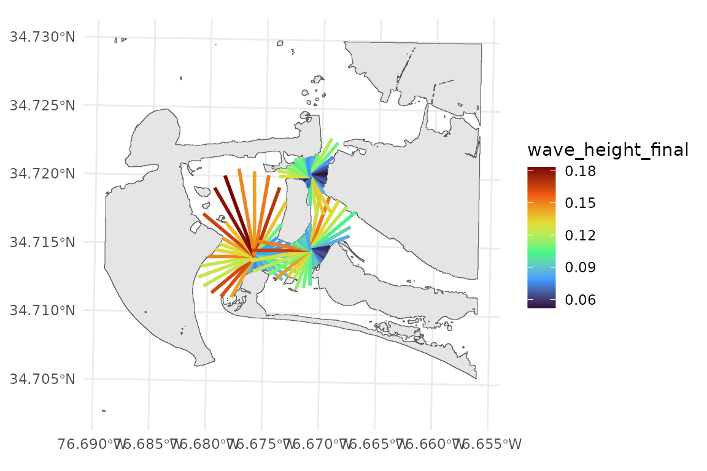
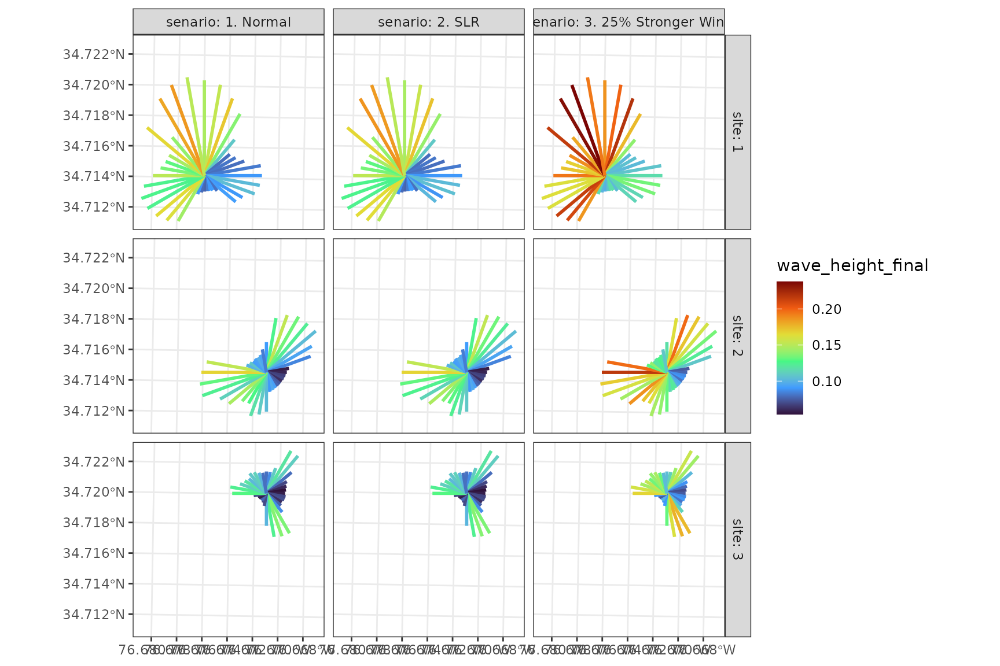

About WEMo
WEMo (Wave Exposure Model) is an R package that implements a simplified hydrodynamic model to quantify wind-wave exposure in coastal and inland waters. It uses linear wave theory to estimate wave height and energy, accounting for local water depth effects like shoaling and wave breaking. It combines wind data, shoreline geometry, and bathymetry to estimate wave conditions through a reproducible and scriptable workflow in R.
This package provides a modern, open-source, and accessible implementation of the original WEMo, which was developed by NOAA’s Center for Coastal Fisheries and Habitat Research and previously required a proprietary plug-in for ESRI’s ArcMap software. As the original tool is no longer compatible with modern GIS software, this R package provides a sustainable and license-free path forward for researchers and resource managers.
In addition to the core modeling functionality, this package provides dynamic tools for gathering and preparing input data and visualizing results.
More info on the original WEMo here: https://coastalscience.noaa.gov/science-areas/climate-change/wemo/
Input Data Overview
WEMo requires four key inputs:
A bathymetry raster
A shoreline polygon
A summarized wind history
A set of site points for which wave exposure will be calculated
Bathymetry
Bathymetry describes underwater terrain, which influences wave growth
and breaking. WEMo requires bathymetry as a raster (GeoTIF
.tif), typically in meters relative to a vertical datum
like NAVD88.
The function get_noaa_cudem() provides access to NOAA’s
Continuously Updated Digital Elevation Model CUDEM
(https://www.ncei.noaa.gov/products/coastal-elevation-models)
allowing users to quickly download and incorporate CUDEM topobathy data
in their workflow.
Shoreline
The shoreline defines the land-water boundary which is critical for fetch calculations.
The function generate_shoreline_from_bathy() generates a
shoreline polygon at a user defined contour on your input bathymetric
raster.
Wind
WEMo is a local wind-wave only model, other sources of waves like tides and seiche are not considered.
The function get_wind_data() gives users access to NOAA’s
The Global Historical Climatology Network hourly (GHCNh) dataset
(via the worldmet package)
to retrieve wind data for use in WEMo. Users can select a station,
either interactively or by providing an index or station code.
The function summarize_wind_data() prepares wind data to
be used by WEMo by cleaning and summarizing data from
get_wind_data().
Site Points
Site points define where WEMo will compute wave exposure.
Users can read in their own points as shapefiles or create a grid of
points around coordinates using generate_grid_points().
Running WEMo
Installation
# Ensure you have the remotes package installed, if not download and install it
if(!require(remotes)) install.packages("remotes")
# Download the latest version of WEMo from github
remotes::install_github("MSE-NCCOS-NOAA/WEMo", force = TRUE)Load Libraries
# Load WEMo into your environment
library(WEMo)
# We use terra for raster data handling
library(terra)
# We use sf for other spatial data handling
library(sf)
# We use ggplot2 to create visualizations
library(ggplot2)
# We use tidyterra to help ggplot2 with objects created in terra
library(tidyterra)
# we also set the default theme for plotting
theme_set(theme_minimal())Load our input data
A suite of example data is included with WEMo. The data are from the area around Pivers Island, Beaufort, North Carolina.
Bathymetry
This raster should cover the full extent of the area that you might expect to be reached by fetch rays from your site.
# load bathymetry
PI_bathy <- terra::rast(x = system.file("extdata", "PI_bathy.tif", package = "WEMo"))
# plot the bathy raster
ggplot() +
geom_spatraster(data = PI_bathy)+
labs(fill = "Bathymetry (m NAVD88)")
# 1. Try the standard way (works if package is installed)
bathy_path <- system.file("extdata", "PI_bathy.tif", package = "WEMo")
# 2. If that fails (GitHub Actions), search the whole project
if (bathy_path == "" || !file.exists(bathy_path)) {
# We look for the file starting from two levels up and searching down
# 'recursive = TRUE' is the key here.
all_files <- list.files(path = "../..",
pattern = "PI_bathy.tif",
recursive = TRUE,
full.names = TRUE)
# Filter to make sure we get the one in the inst/ folder, not a copy in docs/
bathy_path <- grep("inst/extdata/PI_bathy.tif", all_files, value = TRUE)[1]
}
# 3. Final validation
if (is.na(bathy_path) || !file.exists(bathy_path)) {
stop("Could not find PI_bathy.tif. Check if it's been pushed to GitHub.")
}
PI_bathy <- terra::rast(bathy_path)
# plot the bathy raster
ggplot() +
geom_spatraster(data = PI_bathy)+
labs(fill = "Bathymetry (m NAVD88)")
#> <SpatRaster> resampled to 500556 cells.
Site Points
# Plot site points
# PI_Points is a sf object containing 3 points
ggplot()+
geom_sf(data = PI_points, color = "red", size = 3)
Shoreline
# Plot shoreline
# PI_shoreline is a polygon representing the MHHW shoreline (0.552 m NAVD88)
ggplot()+
geom_sf(data = PI_shoreline, fill = "honeydew3")
Plot All Input Spatial Data
# plot all input spatial data
ggplot()+
geom_spatraster(data = PI_bathy)+
geom_sf(data = PI_shoreline, fill = "honeydew3")+
geom_sf(data = PI_points, color = 'red')+
labs(fill = "Bathymetry (m NAVD88)")
#> <SpatRaster> resampled to 500556 cells.
Wind
# View first several rows of wind data
# PI_wind_data contains local wind observations from 2023 - 2024
head(PI_wind_data)
#> # A tibble: 6 × 7
#> station_id time year month day wind_direction wind_speed
#> <fct> <dttm> <dbl> <dbl> <int> <dbl> <dbl>
#> 1 USW00093765 2023-01-01 00:00:00 2023 1 1 209. 5
#> 2 USW00093765 2023-01-01 01:00:00 2023 1 1 225. 6.45
#> 3 USW00093765 2023-01-01 02:00:00 2023 1 1 237. 4.88
#> 4 USW00093765 2023-01-01 03:00:00 2023 1 1 230 4.43
#> 5 USW00093765 2023-01-01 04:00:00 2023 1 1 220 3.6
#> 6 USW00093765 2023-01-01 05:00:00 2023 1 1 240 3.43WEMo wants a summary of the wind history data i.e. one proportion and speed value for each direction.
# Summarizing wind data
# create a vector from 0 to 350 by 10 to snap the input wind_directions to
wanted_directions <- seq(from = 0, to = 350, by = 10)
# calculate the 95th percentile wind speed every 10 degrees
# Using 95 percentile as an example, but the wind speed of interest will change depending on your use case
wind_data_summary <- summarize_wind_data(
wind_data = PI_wind_data,
wind_percentile = 0.95,
directions = wanted_directions
)
# View first several rows of summarized wind data
head(wind_data_summary)
#> # A tibble: 6 × 4
#> direction n proportion speed
#> <dbl> <int> <dbl> <dbl>
#> 1 0 439 2.54 7.2
#> 2 10 558 3.23 7.7
#> 3 20 988 5.71 8.8
#> 4 30 836 4.83 7.7
#> 5 40 822 4.75 7.2
#> 6 50 546 3.16 6.2Plot the summarized wind data as a wind rose:
# Plot wind data summary as a wind rose
wind_rose_plot <- plot_wind_rose(wind_data = wind_data_summary)
# update the title, subtitle and fill description and change the color scale for the filled bars
wind_rose_plot <- wind_rose_plot +
labs(
title = "Pivers Island Wind History",
subtitle = "2023-2024",
fill = "95th %tile Wind\nSpeed (m/s)"
) +
scale_fill_viridis_c(option = "C")
wind_rose_plot
NOTE:plot_wind_rose() creates a ggplot
object that can be saved or further manipulated to match your needs.
Read more about controlling and customizing plots in
ggplot2 here: https://ggplot2.tidyverse.org/
Run WEMo with wemo_full()
Now that all of our input data is gathered and inspected we’re ready to run the model. In this example, WEMo will:
- Model wind waves at each point in
PI_points. - Use
PI_shorelineas the shoreline for drawing fetch rays. - Use the raster
PI_bathyas the bathymetry that waves interact with as they approach the points. - Apply the summarized wind information in
wind_data_summary, which provides the intensity and frequency of wind from each of thewanted_directions.
We also set a few modeling parameters:
-
max_fetch = 10000: the maximum length (in meters) of fetch rays. -
sample_dist = 1: the spacing (in meters) at which bathymetry is sampled and the wave is built along each ray. -
water_level = 0.552: the water level (in the same units as the bathymetry raster). This is mean higher high water for this site -
depths_or_elev = "elev": indicates that the bathymetry file stores elevations (not water depths).
wemo_output <- wemo_full(
site_points = PI_points,
shoreline = PI_shoreline,
bathy = PI_bathy,
wind_data = wind_data_summary,
directions = wanted_directions,
max_fetch = 10000,
sample_dist = 1,
water_level = 0.552,
depths_or_elev = "elev"
)wemo_full() returns two objects
names(wemo_output)
#> [1] "wemo_details" "wemo_final"wemo_final contains the summary stats at each site
wemo_output$wemo_final
#> Simple feature collection with 3 features and 9 fields
#> Geometry type: POINT
#> Dimension: XY
#> Bounding box: xmin: 346536.4 ymin: 3842620 xmax: 346986.4 ymax: 3843270
#> Projected CRS: NAD83 / UTM zone 18N
#> # A tibble: 3 × 10
#> site RWE avg_wave_height max_wave_height direction_of_max_wave avg_fetch
#> <int> <dbl> <dbl> <dbl> <chr> <dbl>
#> 1 1 56.4 0.119 0.183 340 443.
#> 2 2 37.7 0.103 0.166 270 355.
#> 3 3 17.2 0.0874 0.136 160 257.
#> # ℹ 4 more variables: max_fetch <dbl>, avg_efetch <dbl>, max_efetch <dbl>,
#> # geometry <POINT [m]>
# wemo_output$wemo_final can be plotted with input data
ggplot()+
geom_sf(data = PI_shoreline)+
geom_sf(data = wemo_output$wemo_final, aes(color = avg_wave_height), size = 5)+
scale_color_viridis_c(option = "D")
wemo_details contains stats about the waves from each
fetch ray
head(wemo_output$wemo_details)
#> Simple feature collection with 6 features and 14 fields
#> Geometry type: LINESTRING
#> Dimension: XY
#> Bounding box: xmin: 346536.4 ymin: 3842620 xmax: 346795.2 ymax: 3843312
#> Projected CRS: NAD83 / UTM zone 18N
#> # A tibble: 6 × 15
#> direction fetch site efetch geometry distances n
#> <dbl> <dbl> <int> <dbl> <LINESTRING [m]> <list> <int>
#> 1 0 806. 1 692. (346536.4 3842620, 346536.4 3843… <dbl> 439
#> 2 10 696. 1 670. (346536.4 3842620, 346652.7 3843… <dbl> 558
#> 3 20 782. 1 596. (346536.4 3842620, 346740.3 3843… <dbl> 988
#> 4 30 518. 1 518. (346536.4 3842620, 346795.2 3843… <dbl> 836
#> 5 40 340. 1 340. (346536.4 3842620, 346755.1 3842… <dbl> 822
#> 6 50 241. 1 241. (346536.4 3842620, 346721.2 3842… <dbl> 546
#> # ℹ 8 more variables: proportion <dbl>, speed <dbl>, wave_height_final <dbl>,
#> # WEI <dbl>, wave_period <dbl>, wave_number <dbl>, celerity_final <dbl>,
#> # nnumber_final <dbl>
# wemo_output$wemo_details can be plotted with input data
ggplot()+
geom_sf(data = PI_shoreline)+
geom_sf(data = wemo_output$wemo_details, aes(color = wave_height_final), linewidth = 1)+
scale_color_viridis_c(option = "H")
NOTE: Notice how the fetch rays do not reach all the way to the
shoreline in some directions? These are effective or cosine weighted
fetch rays. They are constrained by the fetch rays that surround them.
Additionally, the parameter max_fetch constrains the
maximum distance that fetch rays are drawn. If you’d like to plot or
save the full fetch rays the function find_fetch() creates
the fetch rays and returns a object that can be saved or plotted.
[Do i need this effective fetch explanation or can I refer to
more source?].
Most users will probably only want the data from
wemo_final, but wemo_details can be useful to
understand why the results in wemo_final are what they
are.
Saving Results
sf::st_write(wemo_output$wemo_details, "/path/to/save/wemo_details.shp")
sf::st_write(wemo_output$wemo_final, "/path/to/save/wemo_final.shp")
# Export as CSV
results_df <- st_drop_geometry(wemo_output$wemo_final)
write.csv(results_df, "/path/to/save/results.csv")Re-Running With Modified Inputs
wemo_full() is great because it doesn’t require working
with any intermediate products of WEMo. But what if you’d like to see
how the model output changes with a different wind regime or with sea
level rise? Running wemo_full() again works, but
re-computes fetch and bathymetry each time.
For faster iteration, prepare inputs once:
inputs <- prepare_wemo_inputs(
site_points = PI_points,
shoreline = PI_shoreline,
bathy = PI_bathy,
wind_data = wind_data_summary,
directions = wanted_directions,
max_fetch = 1000,
sample_dist = 10,
water_level = 0.552,
depths_or_elev = "elev"
)Then run the model:
results <- wemo(fetch = inputs)Example: Adding Sea Level Rise
# add 0.3 m to each depth value
inputs_SLR <- update_depths(inputs, depth_diff = 0.3)
results_SLR <- wemo(inputs_SLR)
# compare to previous results
data.frame(
site = results$wemo_final$site,
max_wave_height = round(results_SLR$wemo_final$max_wave_height - results$wemo_final$max_wave_height, 3),
avg_wave_height = round(results_SLR$wemo_final$avg_wave_height - results$wemo_final$avg_wave_height, 3),
RWE = round(results_SLR$wemo_final$RWE - results$wemo_final$RWE, 3)
)
#> site max_wave_height avg_wave_height RWE
#> 1 1 0.001 0.001 1.561
#> 2 2 0.000 0.001 0.940
#> 3 3 0.000 0.000 0.112We see a slight increase in wave heights and RWE from raising sea level. Note we didn’t change our shorelines and were already running the model at MHHW meaning waves from out original run likely didn’t experience breaking or shoaling – both possible reasons why we don’t see a dramatic effect on the results.
Example: Stronger Winds
# Create a copy of the inputs
inputs_windy <- inputs
# Increase wind speed by 25%
inputs_windy$speed <- inputs_windy$speed * 1.25
results_windy <- wemo(inputs_windy)
# compare to previous results
data.frame(
site = results$wemo_final$site,
max_wave_height = round(results_windy$wemo_final$max_wave_height - results$wemo_final$max_wave_height, digits = 3),
avg_wave_height = round(results_windy$wemo_final$avg_wave_height - results$wemo_final$avg_wave_height, digits = 3),
RWE = round(results_windy$wemo_final$RWE - results$wemo_final$RWE, digits = 3)
)
#> site max_wave_height avg_wave_height RWE
#> 1 1 0.052 0.035 61.227
#> 2 2 0.049 0.030 40.111
#> 3 3 0.041 0.026 19.001We see increases in wave heights up to 5 cm for max wave heights and 3.5 cm for average wave heights. Also see a corresponding increase in RWE.
Comparing Results Senarios
this is a bit advanced, but a cool visual
# make a data set to combine all results
results_all <- dplyr::bind_rows(
dplyr::mutate(results$wemo_details, senario = "1. Normal"),
dplyr::mutate(results_SLR$wemo_details, senario = "2. SLR"),
dplyr::mutate(results_windy$wemo_details, senario = "3. 25% Stronger Wind")
)
ggplot()+
geom_sf(data = results_all, aes(color = wave_height_final), linewidth = 1)+
scale_color_viridis_c(option = "H")+
facet_grid(site~senario, labeller = "label_both")+
theme_bw()